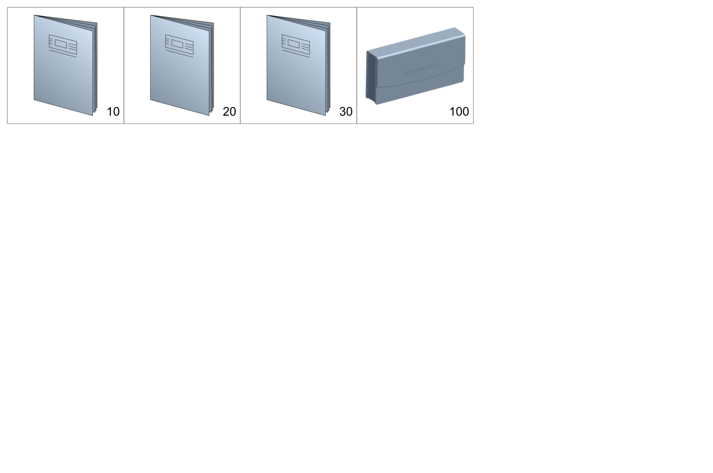

| № | Артикул | Название | Кол. | Примечание |
|---|---|---|---|---|
| 10 | A 244 584 38 00 | Краткий обзор | 1 | Краткая инструкция по эксплуатации |
| 10 | A 244 584 39 00 | Краткий обзор (BRIEF OVERVIEW) | 1 | Краткая инструкция по эксплуатации |
| 10 | A 244 584 40 00 | Краткий обзор (BRIEF OVERVIEW) | 1 | Краткая инструкция по эксплуатации |
| 10 | A 244 584 41 00 | Краткий обзор (BRIEF OVERVIEW) | 1 | Краткая инструкция по эксплуатации |
| 10 | A 244 584 42 00 | Краткий обзор (BRIEF OVERVIEW) | 1 | Краткая инструкция по эксплуатации |
| 10 | A 244 584 69 00 | Краткий обзор | 1 | Краткая инструкция по эксплуатации |
| 10 | A 244 584 88 00 | Краткий обзор | 1 | Краткая инструкция по эксплуатации |
| 10 | A 244 584 88 00 | Краткий обзор | 1 | Краткая инструкция по эксплуатации |
| 10 | A 244 584 39 01 | Краткий обзор | 1 | Краткая инструкция по эксплуатации |
| 10 | A 244 584 89 00 | Краткий обзор (BRIEF OVERVIEW) | 1 | Краткая инструкция по эксплуатации |
| 10 | A 244 584 89 00 | Краткий обзор (BRIEF OVERVIEW) | 1 | Краткая инструкция по эксплуатации |
| 10 | A 244 584 40 01 | Краткий обзор (BRIEF OVERVIEW) | 1 | Краткая инструкция по эксплуатации |
| 10 | A 244 584 90 00 | Краткий обзор (BRIEF OVERVIEW) | 1 | Краткая инструкция по эксплуатации |
| 10 | A 244 584 90 00 | Краткий обзор (BRIEF OVERVIEW) | 1 | Краткая инструкция по эксплуатации |
| 10 | A 244 584 41 01 | Краткий обзор (BRIEF OVERVIEW) | 1 | Краткая инструкция по эксплуатации |
| 10 | A 244 584 70 00 | Краткий обзор (BRIEF OVERVIEW) | 1 | Краткая инструкция по эксплуатации |
| 10 | A 244 584 91 00 | Краткий обзор (BRIEF OVERVIEW) | 1 | Краткая инструкция по эксплуатации |
| 10 | A 244 584 91 00 | Краткий обзор (BRIEF OVERVIEW) | 1 | Краткая инструкция по эксплуатации |
| 10 | A 244 584 42 01 | Краткий обзор (BRIEF OVERVIEW) | 1 | Краткая инструкция по эксплуатации |
| 10 | A 244 584 71 00 | Краткий обзор (BRIEF OVERVIEW) | 1 | Краткая инструкция по эксплуатации |
| 10 | A 244 584 92 00 | Краткий обзор (BRIEF OVERVIEW) | 1 | Краткая инструкция по эксплуатации |
| 10 | A 244 584 92 00 | Краткий обзор (BRIEF OVERVIEW) | 1 | Краткая инструкция по эксплуатации |
| 10 | A 244 584 43 01 | Краткий обзор (BRIEF OVERVIEW) | 1 | Краткая инструкция по эксплуатации |
| 10 | A 244 584 72 00 | Краткий обзор (BRIEF OVERVIEW) | 1 | Краткая инструкция по эксплуатации |
| 10 | A 244 584 93 00 | Краткий обзор (BRIEF OVERVIEW) | 1 | Краткая инструкция по эксплуатации |
| 10 | A 244 584 93 00 | Краткий обзор (BRIEF OVERVIEW) | 1 | Краткая инструкция по эксплуатации |
| 10 | A 244 584 44 01 | Краткий обзор (BRIEF OVERVIEW) | 1 | Краткая инструкция по эксплуатации |
| 10 | A 244 584 73 00 | Краткий обзор (BRIEF OVERVIEW) | 1 | Краткая инструкция по эксплуатации |
| 10 | A 244 584 94 00 | Краткий обзор (BRIEF OVERVIEW) | 1 | Краткая инструкция по эксплуатации |
| 10 | A 244 584 94 00 | Краткий обзор (BRIEF OVERVIEW) | 1 | Краткая инструкция по эксплуатации |
| 10 | A 244 584 45 01 | Краткий обзор (BRIEF OVERVIEW) | 1 | Краткая инструкция по эксплуатации |
| 10 | A 244 584 95 00 | Краткий обзор (BRIEF OVERVIEW) | 1 | Краткая инструкция по эксплуатации |
| 10 | A 244 584 95 00 | Краткий обзор (BRIEF OVERVIEW) | 1 | Краткая инструкция по эксплуатации |
| 10 | A 244 584 46 01 | Краткий обзор (BRIEF OVERVIEW) | 1 | Краткая инструкция по эксплуатации |
| 10 | A 244 584 96 00 | Краткий обзор (BRIEF OVERVIEW) | 1 | Краткая инструкция по эксплуатации |
| 10 | A 244 584 96 00 | Краткий обзор (BRIEF OVERVIEW) | 1 | Краткая инструкция по эксплуатации |
| 10 | A 244 584 47 01 | Краткий обзор (BRIEF OVERVIEW) | 1 | Краткая инструкция по эксплуатации |
| 10 | A 244 584 98 00 | Краткий обзор (BRIEF OVERVIEW) | 1 | Краткая инструкция по эксплуатации, на английском |
| 10 | A 244 584 98 00 | Краткий обзор (BRIEF OVERVIEW) | 1 | Краткая инструкция по эксплуатации, на английском |
| 10 | A 244 584 49 01 | Краткий обзор (BRIEF OVERVIEW) | 1 | Краткая инструкция по эксплуатации, на английском |
| 10 | A 244 584 99 00 | Краткий обзор (BRIEF OVERVIEW) | 1 | Краткая инструкция по эксплуатации, на французском |
| 10 | A 244 584 99 00 | Краткий обзор (BRIEF OVERVIEW) | 1 | Краткая инструкция по эксплуатации, на французском |
| 10 | A 244 584 50 01 | Краткий обзор (BRIEF OVERVIEW) | 1 | Краткая инструкция по эксплуатации, на французском |
| 10 | A 244 584 50 01 | Краткий обзор (BRIEF OVERVIEW) | 1 | Краткая инструкция по эксплуатации |
| 10 | A 244 584 27 01 | Краткий обзор | 1 | Краткая инструкция по эксплуатации |
| 10 | A 244 584 27 01 | Краткий обзор | 1 | Краткая инструкция по эксплуатации |
| 10 | A 244 584 27 01 | Краткий обзор | 1 | Краткая инструкция по эксплуатации |
| 10 | A 244 584 27 01 | Краткий обзор | 1 | Краткая инструкция по эксплуатации |
| 10 | A 244 584 28 01 | Краткий обзор (BRIEF OVERVIEW) | 1 | Краткая инструкция по эксплуатации |
| 10 | A 244 584 28 01 | Краткий обзор (BRIEF OVERVIEW) | 1 | Краткая инструкция по эксплуатации |
| 10 | A 244 584 29 01 | Краткий обзор (BRIEF OVERVIEW) | 1 | Краткая инструкция по эксплуатации |
| 10 | A 244 584 29 01 | Краткий обзор (BRIEF OVERVIEW) | 1 | Краткая инструкция по эксплуатации |
| 10 | A 244 584 30 01 | Краткий обзор (BRIEF OVERVIEW) | 1 | Краткая инструкция по эксплуатации |
| 10 | A 244 584 30 01 | Краткий обзор (BRIEF OVERVIEW) | 1 | Краткая инструкция по эксплуатации |
| 10 | A 244 584 31 01 | Краткий обзор (BRIEF OVERVIEW) | 1 | Краткая инструкция по эксплуатации |
| 10 | A 244 584 31 01 | Краткий обзор (BRIEF OVERVIEW) | 1 | Краткая инструкция по эксплуатации |
| 10 | A 244 584 32 01 | Краткий обзор (BRIEF OVERVIEW) | 1 | Краткая инструкция по эксплуатации |
| 10 | A 244 584 32 01 | Краткий обзор (BRIEF OVERVIEW) | 1 | Краткая инструкция по эксплуатации |
| 10 | A 244 584 33 01 | Краткий обзор (BRIEF OVERVIEW) | 1 | Краткая инструкция по эксплуатации |
| 10 | A 244 584 33 01 | Краткий обзор (BRIEF OVERVIEW) | 1 | Краткая инструкция по эксплуатации |
| 10 | A 244 584 34 01 | Краткий обзор (BRIEF OVERVIEW) | 1 | Краткая инструкция по эксплуатации |
| 10 | A 244 584 34 01 | Краткий обзор (BRIEF OVERVIEW) | 1 | Краткая инструкция по эксплуатации |
| 10 | A 244 584 35 01 | Краткий обзор (BRIEF OVERVIEW) | 1 | Краткая инструкция по эксплуатации |
| 10 | A 244 584 35 01 | Краткий обзор (BRIEF OVERVIEW) | 1 | Краткая инструкция по эксплуатации |
| 10 | A 244 584 37 01 | Краткий обзор (BRIEF OVERVIEW) | 1 | Краткая инструкция по эксплуатации |
| 10 | A 244 584 37 01 | Краткий обзор (BRIEF OVERVIEW) | 1 | Краткая инструкция по эксплуатации |
| 10 | A 244 584 38 01 | Краткий обзор (BRIEF OVERVIEW) | 1 | Краткая инструкция по эксплуатации |
| 10 | A 244 584 38 01 | Краткий обзор (BRIEF OVERVIEW) | 1 | Краткая инструкция по эксплуатации |
| 10 | A 244 584 43 00 | Руководство (OPERATOR'S MANUAL) | 1 | |
| 10 | A 244 584 44 00 | Руководство (OPERATOR'S MANUAL) | 1 | |
| 10 | A 244 584 74 00 | Руководство (OPERATOR'S MANUAL) | 1 | |
| 10 | A 244 584 00 00 | Руководство (OPERATOR'S MANUAL) | 1 | |
| 10 | A 244 584 00 00 | Руководство (OPERATOR'S MANUAL) | 1 | |
| 10 | A 244 584 51 01 | Руководство (OPERATOR'S MANUAL) | 1 | |
| 10 | A 244 584 75 00 | Руководство (OPERATOR'S MANUAL) | 1 | |
| 10 | A 244 584 00 01 | Руководство (OPERATOR'S MANUAL) | 1 | |
| 10 | A 244 584 00 01 | Руководство (OPERATOR'S MANUAL) | 1 | |
| 10 | A 244 584 52 01 | Руководство (OPERATOR'S MANUAL) | 1 | |
| 10 | A 244 584 13 01 | Руководство (OPERATOR'S MANUAL) | 1 | |
| 10 | A 244 584 13 01 | Руководство (OPERATOR'S MANUAL) | 1 | |
| 10 | A 244 584 14 01 | Руководство (OPERATOR'S MANUAL) | 1 | |
| 10 | A 244 584 14 01 | Руководство (OPERATOR'S MANUAL) | 1 | |
| 10 | A 244 584 45 00 | Руководство | 1 | |
| 10 | A 244 584 46 00 | Руководство (OPERATOR'S MANUAL) | 1 | |
| 10 | A 244 584 47 00 | Руководство (OPERATOR'S MANUAL) | 1 | |
| 10 | A 244 584 48 00 | Руководство (OPERATOR'S MANUAL) | 1 | |
| 10 | A 244 584 49 00 | Руководство (OPERATOR'S MANUAL) | 1 | |
| 10 | A 244 584 01 01 | Руководство | 1 | |
| 10 | A 244 584 01 01 | Руководство | 1 | |
| 10 | A 244 584 53 01 | Руководство | 1 | |
| 10 | A 244 584 76 00 | Руководство | 1 | |
| 10 | A 244 584 01 01 | Руководство | 1 | |
| 10 | A 244 584 01 01 | Руководство | 1 | |
| 10 | A 244 584 53 01 | Руководство | 1 | |
| 10 | A 244 584 02 01 | Руководство (OPERATOR'S MANUAL) | 1 | |
| 10 | A 244 584 02 01 | Руководство (OPERATOR'S MANUAL) | 1 | |
| 10 | A 244 584 54 01 | Руководство (OPERATOR'S MANUAL) | 1 | |
| 10 | A 244 584 03 01 | Руководство (OPERATOR'S MANUAL) | 1 | |
| 10 | A 244 584 03 01 | Руководство (OPERATOR'S MANUAL) | 1 | |
| 10 | A 244 584 55 01 | Руководство (OPERATOR'S MANUAL) | 1 | |
| 10 | A 244 584 77 00 | Руководство (OPERATOR'S MANUAL) | 1 | |
| 10 | A 244 584 04 01 | Руководство (OPERATOR'S MANUAL) | 1 | |
| 10 | A 244 584 04 01 | Руководство (OPERATOR'S MANUAL) | 1 | |
| 10 | A 244 584 56 01 | Руководство (OPERATOR'S MANUAL) | 1 | |
| 10 | A 244 584 78 00 | Руководство (OPERATOR'S MANUAL) | 1 | |
| 10 | A 244 584 05 01 | Руководство (OPERATOR'S MANUAL) | 1 | |
| 10 | A 244 584 05 01 | Руководство (OPERATOR'S MANUAL) | 1 | |
| 10 | A 244 584 57 01 | Руководство (OPERATOR'S MANUAL) | 1 | |
| 10 | A 244 584 79 00 | Руководство (OPERATOR'S MANUAL) | 1 | |
| 10 | A 244 584 06 01 | Руководство (OPERATOR'S MANUAL) | 1 | |
| 10 | A 244 584 06 01 | Руководство (OPERATOR'S MANUAL) | 1 | |
| 10 | A 244 584 58 01 | Руководство (OPERATOR'S MANUAL) | 1 | |
| 10 | A 244 584 80 00 | Руководство (OPERATOR'S MANUAL) | 1 | |
| 10 | A 244 584 07 01 | Руководство (OPERATOR'S MANUAL) | 1 | |
| 10 | A 244 584 07 01 | Руководство (OPERATOR'S MANUAL) | 1 | |
| 10 | A 244 584 59 01 | Руководство (OPERATOR'S MANUAL) | 1 | |
| 10 | A 244 584 08 01 | Руководство (OPERATOR'S MANUAL) | 1 | |
| 10 | A 244 584 08 01 | Руководство (OPERATOR'S MANUAL) | 1 | |
| 10 | A 244 584 60 01 | Руководство (OPERATOR'S MANUAL) | 1 | |
| 10 | A 244 584 09 01 | Руководство (OPERATOR'S MANUAL) | 1 | |
| 10 | A 244 584 09 01 | Руководство (OPERATOR'S MANUAL) | 1 | |
| 10 | A 244 584 61 01 | Руководство (OPERATOR'S MANUAL) | 1 | |
| 10 | A 244 584 10 01 | Руководство (OPERATOR'S MANUAL) | 1 | На испанском |
| 10 | A 244 584 10 01 | Руководство (OPERATOR'S MANUAL) | 1 | На испанском |
| 10 | A 244 584 62 01 | Руководство (OPERATOR'S MANUAL) | 1 | На испанском |
| 10 | A 244 584 11 01 | Руководство (OPERATOR'S MANUAL) | 1 | На английском |
| 10 | A 244 584 11 01 | Руководство (OPERATOR'S MANUAL) | 1 | На английском |
| 10 | A 244 584 63 01 | Руководство (OPERATOR'S MANUAL) | 1 | На английском |
| 10 | A 244 584 12 01 | Руководство (OPERATOR'S MANUAL) | 1 | На французском |
| 10 | A 244 584 12 01 | Руководство (OPERATOR'S MANUAL) | 1 | На французском |
| 10 | A 244 584 64 01 | Руководство (OPERATOR'S MANUAL) | 1 | На французском |
| 10 | A 244 584 97 00 | Краткий обзор (BRIEF OVERVIEW) | 1 | Краткая инструкция по эксплуатации, на испанском |
| 10 | A 244 584 97 00 | Краткий обзор (BRIEF OVERVIEW) | 1 | Краткая инструкция по эксплуатации, на испанском |
| 10 | A 244 584 48 01 | Краткий обзор (BRIEF OVERVIEW) | 1 | Краткая инструкция по эксплуатации, на испанском |
| 10 | A 244 584 15 01 | Руководство | 1 | |
| 10 | A 244 584 15 01 | Руководство | 1 | |
| 10 | A 244 584 15 01 | Руководство | 1 | |
| 10 | A 244 584 15 01 | Руководство | 1 | |
| 10 | A 244 584 16 01 | Руководство (OPERATOR'S MANUAL) | 1 | |
| 10 | A 244 584 16 01 | Руководство (OPERATOR'S MANUAL) | 1 | |
| 10 | A 244 584 17 01 | Руководство (OPERATOR'S MANUAL) | 1 | |
| 10 | A 244 584 17 01 | Руководство (OPERATOR'S MANUAL) | 1 | |
| 10 | A 244 584 18 01 | Руководство (OPERATOR'S MANUAL) | 1 | |
| 10 | A 244 584 18 01 | Руководство (OPERATOR'S MANUAL) | 1 | |
| 10 | A 244 584 19 01 | Руководство (OPERATOR'S MANUAL) | 1 | |
| 10 | A 244 584 19 01 | Руководство (OPERATOR'S MANUAL) | 1 | |
| 10 | A 244 584 20 01 | Руководство (OPERATOR'S MANUAL) | 1 | |
| 10 | A 244 584 20 01 | Руководство (OPERATOR'S MANUAL) | 1 | |
| 10 | A 244 584 21 01 | Руководство (OPERATOR'S MANUAL) | 1 | |
| 10 | A 244 584 21 01 | Руководство (OPERATOR'S MANUAL) | 1 | |
| 10 | A 244 584 22 01 | Руководство (OPERATOR'S MANUAL) | 1 | |
| 10 | A 244 584 22 01 | Руководство (OPERATOR'S MANUAL) | 1 | |
| 10 | A 244 584 23 01 | Руководство (OPERATOR'S MANUAL) | 1 | |
| 10 | A 244 584 23 01 | Руководство (OPERATOR'S MANUAL) | 1 | |
| 10 | A 244 584 24 01 | Руководство (OPERATOR'S MANUAL) | 1 | |
| 10 | A 244 584 24 01 | Руководство (OPERATOR'S MANUAL) | 1 | |
| 10 | A 244 584 25 01 | Руководство (OPERATOR'S MANUAL) | 1 | |
| 10 | A 244 584 25 01 | Руководство (OPERATOR'S MANUAL) | 1 | |
| 10 | A 244 584 26 01 | Руководство (OPERATOR'S MANUAL) | 1 | |
| 10 | A 244 584 26 01 | Руководство (OPERATOR'S MANUAL) | 1 | |
| 10 | A 244 584 36 01 | Краткий обзор (BRIEF OVERVIEW) | 1 | Краткая инструкция по эксплуатации |
| 10 | A 244 584 36 01 | Краткий обзор (BRIEF OVERVIEW) | 1 | Краткая инструкция по эксплуатации |
| 20 | A 174 584 03 01 | Доп. руководство | 1 | Руководство по эксплуатации дополнительного оборудования, документы, Mobilo/гарантия |
| 20 | A 174 584 04 01 | Доп. руководство (SUPPLEMENT) | 1 | Руководство по эксплуатации дополнительного оборудования, документы, Mobilo/гарантия |
| 20 | A 174 584 16 02 | Доп. руководство (SUPPLEMENT) | 1 | Аккумуляторная батарея |
| 20 | A 244 584 81 00 | Складной буклет (ACCORDION-FOLD DOCUMENT) | 1 | Буклет Quick Start Guide |
| 20 | A 244 584 81 00 | Складной буклет (ACCORDION-FOLD DOCUMENT) | 1 | Буклет Quick Start Guide |
| 20 | A 244 584 82 00 | Складной буклет (ACCORDION-FOLD DOCUMENT) | 1 | Буклет Quick Start Guide |
| 20 | A 244 584 82 00 | Складной буклет (ACCORDION-FOLD DOCUMENT) | 1 | Буклет Quick Start Guide |
| 20 | A 244 584 83 00 | Складной буклет (ACCORDION-FOLD DOCUMENT) | 1 | Буклет Quick Start Guide |
| 20 | A 244 584 83 00 | Складной буклет (ACCORDION-FOLD DOCUMENT) | 1 | Буклет Quick Start Guide |
| 20 | A 244 584 84 00 | Складной буклет (ACCORDION-FOLD DOCUMENT) | 1 | Буклет Quick Start Guide |
| 20 | A 244 584 84 00 | Складной буклет (ACCORDION-FOLD DOCUMENT) | 1 | Буклет Quick Start Guide |
| 20 | A 244 584 85 00 | Складной буклет (ACCORDION-FOLD DOCUMENT) | 1 | Буклет Quick Start Guide |
| 20 | A 244 584 85 00 | Складной буклет (ACCORDION-FOLD DOCUMENT) | 1 | Буклет Quick Start Guide |
| 20 | A 174 584 99 03 | Складной буклет (ACCORDION-FOLD DOCUMENT) | 1 | Буклет Quick Start Guide |
| 20 | A 174 584 06 04 | Складной буклет (ACCORDION-FOLD DOCUMENT) | 1 | Буклет Quick Start Guide |
| 30 | A 174 584 34 00 | Сервисная книжка | 1 | Руководство по эксплуатации/сервисная книжка/сопровод.документы |
| 30 | A 174 584 22 03 | Сервисная книжка | 1 | Руководство по эксплуатации/сервисная книжка/сопровод.документы |
| 100 | A 000 585 23 00 | Папка с документацией а/м (VEHICLE DOCUMENT WALLET) | 1 | Руководство по эксплуатации/сервисная книжка/сопровод.документы |
Позиций: 180 · подписано на схемах: 180 · колесо — плавный зум в курсор, перетаскивание — пан, двойной клик — зум, клик по артикулу — скопировать.